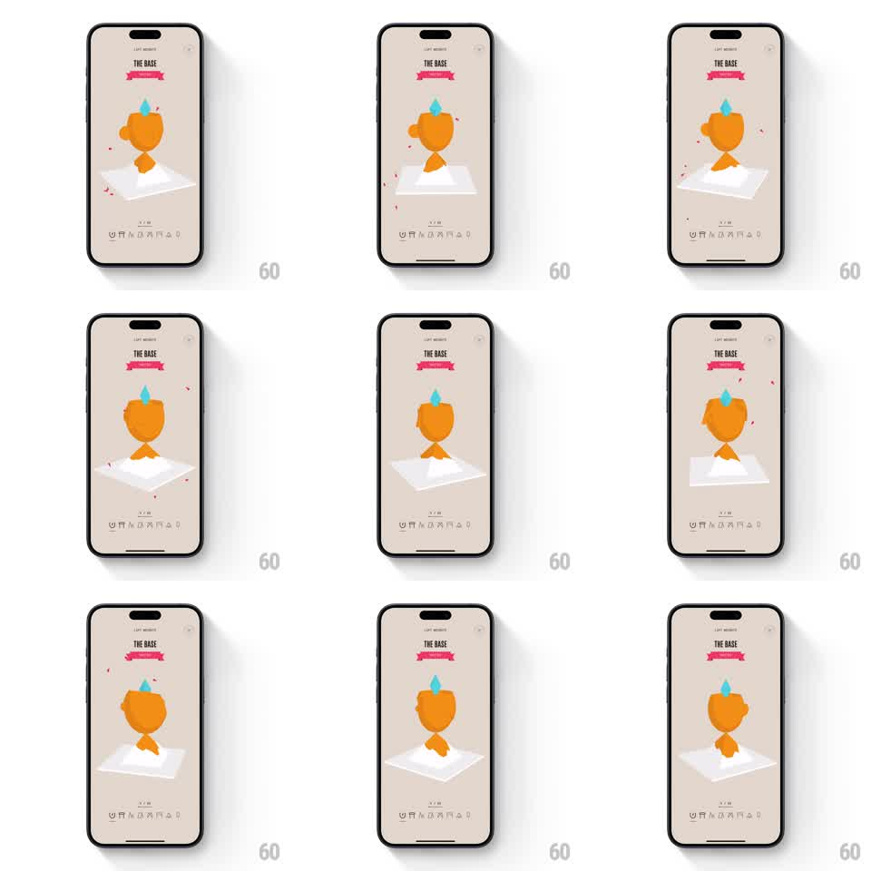

Media
Frame-by-frame

Rebuild this interaction 1:1: Not Boring Habits' rage-tap trophy - a 3D trophy on a pedestal that wobbles harder with each rapid tap and finally erupts in confetti.

Rebuild this interaction 1:1: Not Boring Habits' rage-tap trophy - a 3D trophy on a pedestal that wobbles harder with each rapid tap and finally erupts in confetti. ## Integration Integration: stack-agnostic spec - springs given as stiffness/damping, timed motions as duration + curve; map every value to your framework and animation library of choice. ## Scene Warm cream reward screen: a pink ribbon banner naming the level, a low-poly 3D trophy on a white pedestal at center, and a week-dots progress row at the bottom. ## Motion spec Pattern: escalating wobble with confetti payoff, tap-driven. - Each tap punches the trophy: it rotates away from the tap (+-12deg) and returns on a spring (stiffness 320 damping 10), the whole pedestal flexing with it. - Rapid successive taps stack amplitude: each tap within 300ms of the last adds ~30% more wobble, so rage-tapping builds a visible frenzy. - On the 8th quick tap, the trophy pops (scale 1 to 1.25 to 1) and confetti bursts from behind it - ~20 paper chips in pink and blue, fanning out with gravity, tumbling on their short axes, fading over 900ms. - After the burst the trophy settles to a gentle idle bob (+-3deg, 2s). ## Calibration - The spring is underdamped enough to ring twice visibly; one clean return reads as dead. - Confetti spawns behind the trophy's rim so it reads as erupting from inside the cup. ## Reduced motion Trophy tilts once per tap; confetti falls as a simple fade-out shower. ## Don't miss - The pedestal is the pivot - the trophy leans from its base, never translates. - Idle bob resumes only after the confetti clears; overlapping them muddies the payoff.